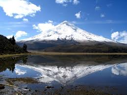
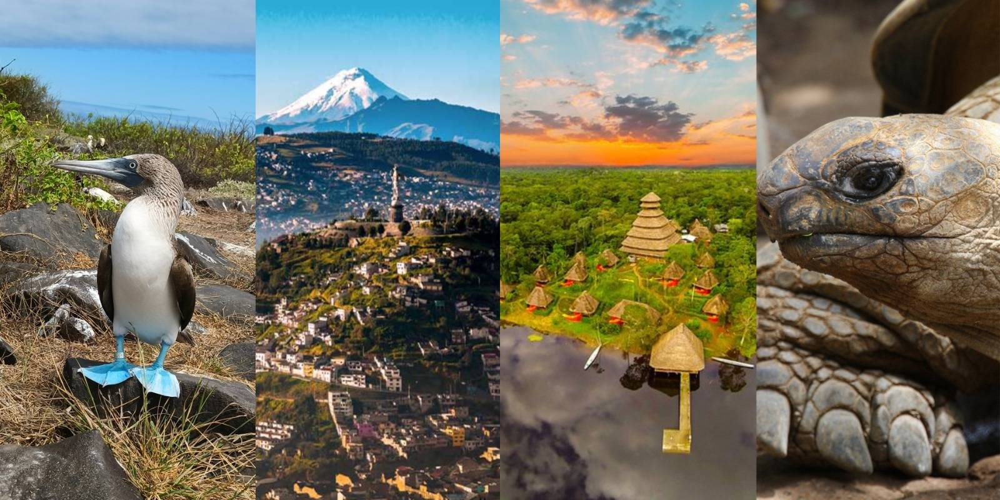
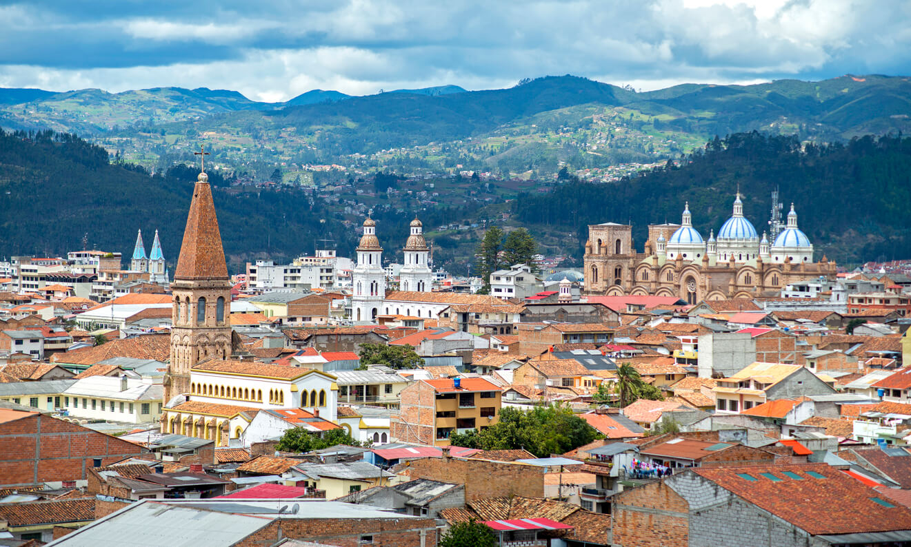
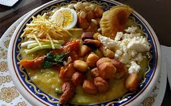

Image file: ecuador-landscapes.jpg
Top Reasons to Visit
- Diverse landscapes: Andes, Amazon, coast, and the Galápagos Islands.
- Cultural heritage: Historic Quito, indigenous markets, and local traditions.
- Delicious food: Ceviche, encebollado, and fresh tropical fruits.

Image file: ecuador-places.jpg
Suggested Places
- Quito: Colonial architecture and mountain views.
- Baños: Adventure sports and waterfalls.
- Galápagos: Unique wildlife and volcanic islands.

Image file: ecuador-seasons.jpg
Best Time to Visit
- Andes (Quito, Cuenca): June to September for drier weather.
- Amazon: Year-round, but expect rain and warm temperatures.
- Coast: December to May for warmer beach days.
- Galápagos: Great all year, with different wildlife seasons.

Image file: ecuador-food.jpg
Food and Travel Tips
- Try local dishes: Hornado, llapingachos, and canelazo.
- Altitude note: In Quito, take it easy the first day.
- Transport: Buses are affordable, and domestic flights save time.
- Currency: Ecuador uses the U.S. dollar.